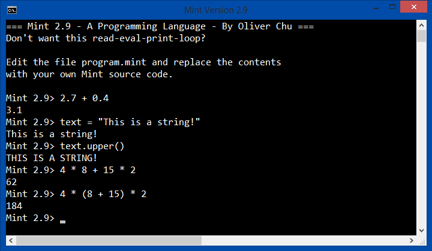

|
Mint comes with an interactive interpreter, similar to the ones that come with Python or Ruby. By default, program.mint contains a loop of code that runs the interpreter, but you are free to replace it with your own Mint program.
The typical way to start with a programming language tutorial is with the Hello world program: print "Hello world!"As you can see, in Mint printing Hello world! to the screen is very simple and only requires 1 line of code. So anyway, how do we start up the interpreter? Mint on Mac & Linux Use the terminal to execute java -jar Mint4.0.jarThis will automatically run program.mint. If this doesn't work, you may need to find your Java installation and make sure java is in your PATH system variable.
Mint on Windows To run this program.mint on Windows, double-click on the RunMint.bat batch file to execute the Mint interpreter. If this doesn't work, you may need to find your Java installation and try to add java to your PATH system variable.For Windows users, Java might be installed somewhere like C:/Program Files/Java/jre7/bin/java.exe.
You can edit the RunMint.bat file so that it looks like this: @echo off title Mint "C:/Program Files/Java/jre7/bin/java.exe" -jar Mint4.0.jar echo [Program Finished.] pauseAnd now your mint programs should run properly. More Code Examples To execute a Mint program that is not named program.mint, go to the command line and type: java -jar Mint.jar NAME_OF_FILE.mintTo execute NAME_OF_FILE.mint. Make sure you cd (change directory) into the folder that contains the Mint interpreter before doing so. This applies on any operating system. Let's write some more code: print 300 print 36 * (8 + 14) print "My name is " + "Alice." a = 100 / 3 print a b = a + 87 print bMint can perform mathematical operations such as 36 * (8 + 14), where * means multiplication and + means addition. Text operations are also possible, with + meaning 'combine these two pieces of text'. You are also allowed to assign variables in Mint, using the format: <name> = <value>Which assigns the value <value> to a variable named <name>. You can also use the keyword 'input' to allow the user to type in information: show "Enter your name:" stuff = input print "Your name is: " + stuff'show' is similar to print, except that it doesn't display a line break on the screen. Comments are used to provide notes and useful info about code. The interpreter ignores all comments. There are two types of comments: line comments (that start with //) and block comments (that start with /* and end with */). //This is a line comment.
/* This is
a block comment */
Here's an image of what the interactive interpreter might look like. If you have already replaced program.mint with your own code, you can find a copy of the code for the interactive interpreter in the file repl.mint. Previous Lesson: Preparations Next Lesson: Operators Table of Contents |